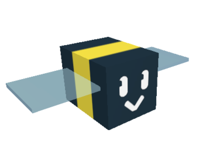
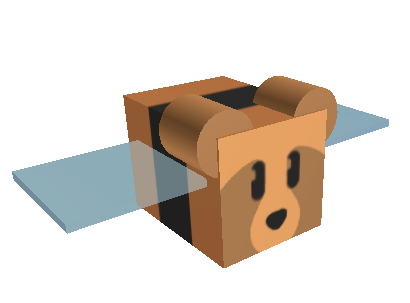

Abeilles de base
Les abeilles sont les éléments principaux du jeu Bee Swarm Simulator. Elles suivent le joueur, collectent du pollen dans les champs, et défendent leur propriétaire des défendeurs de champs. Elles collectent le pollen automatiquement et produisent des jetons de capacité (la capacité à faire quelque chose, être capable, pas la capacité comme le litre). Quant elles reviennent à la ruche, elles convertissent le pollen en miel, l'élément primaire pour acheter des objets dans les boutiques et l'argent du jeu. elles retournent aussi à la ruche pour dormir quand elles sont épuisées, ou quand l'apiculteur meurt. Quand elles sont à la ruche, elles y restent 15 secondent avant de
travailler.


accueil